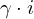
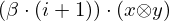
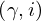
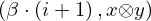
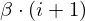
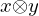
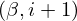
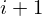
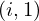

Expression of type ScalarMult¶
from the theory of proveit.linear_algebra.tensors¶
In [1]:
import proveit
# Automation is not needed when building an expression:
proveit.defaults.automation = False # This will speed things up.
proveit.defaults.inline_pngs = False # Makes files smaller.
%load_expr # Load the stored expression as 'stored_expr'
# import Expression classes needed to build the expression
from proveit import beta, gamma, i, x, y
from proveit.linear_algebra import ScalarMult, TensorProd
from proveit.numbers import Add, Mult, one
In [2]:
# build up the expression from sub-expressions
expr = ScalarMult(Mult(gamma, i), ScalarMult(Mult(beta, Add(i, one)), TensorProd(x, y)))
In [3]:
# check that the built expression is the same as the stored expression
assert expr == stored_expr
assert expr._style_id == stored_expr._style_id
print("Passed sanity check: expr matches stored_expr")
In [4]:
# Show the LaTeX representation of the expression for convenience if you need it.
print(stored_expr.latex())
In [5]:
stored_expr.style_options()
In [6]:
# display the expression information
stored_expr.expr_info()
| core type | sub-expressions | expression | |
|---|---|---|---|
| 0 | Operation | operator: 5 operands: 1 | |
| 1 | ExprTuple | 2, 3 | |
| 2 | Operation | operator: 10 operands: 4 |  |
| 3 | Operation | operator: 5 operands: 6 |  |
| 4 | ExprTuple | 7, 20 |  |
| 5 | Literal |  | |
| 6 | ExprTuple | 8, 9 |  |
| 7 | Variable |  | |
| 8 | Operation | operator: 10 operands: 11 |  |
| 9 | Operation | operator: 12 operands: 13 |  |
| 10 | Literal |  | |
| 11 | ExprTuple | 14, 15 |  |
| 12 | Literal |  | |
| 13 | ExprTuple | 16, 17 |  |
| 14 | Variable |  | |
| 15 | Operation | operator: 18 operands: 19 |  |
| 16 | Variable |  | |
| 17 | Variable |  | |
| 18 | Literal |  | |
| 19 | ExprTuple | 20, 21 |  |
| 20 | Variable |  | |
| 21 | Literal |  |